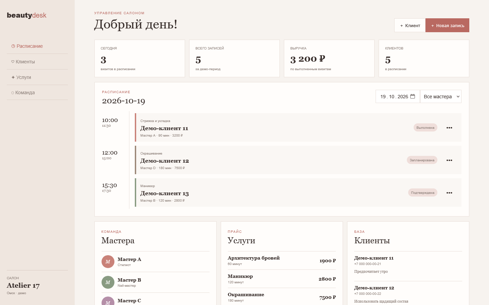
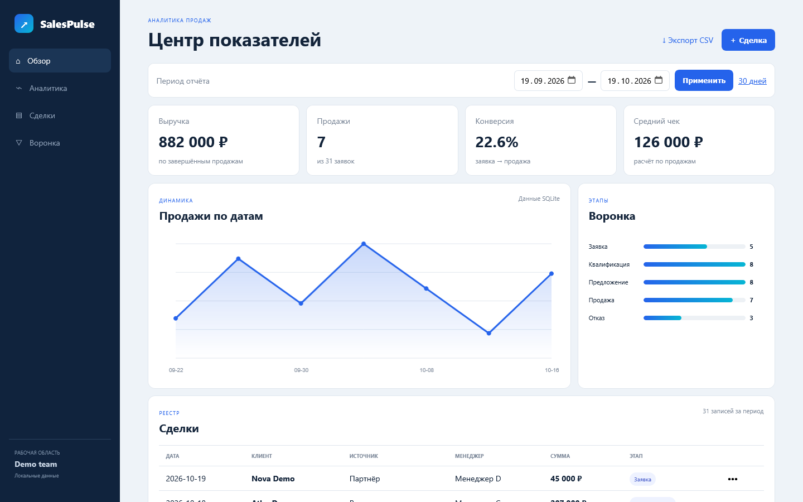

01 / Customers
ClientFlow
Customer records, status filters, search, contact history, and safe rendering of database content.
- Client CRUD
- Interaction timeline
- Search and filters
Flask · SQLite · Responsive UI
A set of local interactive applications for customer management, sales, appointments, and analytics. Each project has its own visual system and a tested database workflow.
Selected systems
The interfaces shown below use Russian demo content. All people, companies, phone numbers, and financial records are synthetic.
01 / Customers
Customer records, status filters, search, contact history, and safe rendering of database content.

02 / Sales
A kanban sales pipeline with priorities, owners, revenue totals, and stage-based work.

03 / Fitness
Member management and class scheduling in a compact, high-contrast interface.

04 / Booking
A salon workspace for appointments, service details, masters, statuses, and daily revenue.

05 / Analytics
Sales reporting with period filters, conversion metrics, average order value, and SQLite-backed charts.
Under the hood
Each application runs locally with Python, Flask, and SQLite. The repository includes automated route and database tests, a reset script for synthetic demo data, and responsive browser checks for desktop, tablet, and mobile widths.
View the repository →